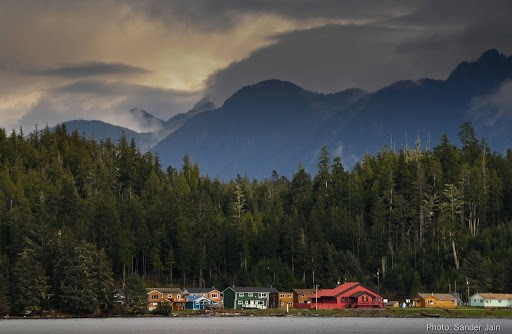
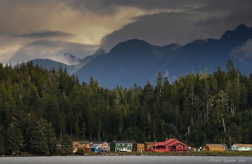

Nuu-chah-nulth Prayer,
Offered by Levi Martin of Tla-o-qui-aht, February 2013 (Smith, 2017)
wai kaš nas haa łapi hawaał (why kash nahs haa thla-pi haawaylth) Praise the light of day, the creator wai kaš nas haa łapi hawaał (why kash nahs haa thla-pi haawaylth) Praise the light of day, the creator łaak łaakʷas suu tił hawaał (thalk thlakwas soo tilth haawaylth) I am pleading with you, creator qaa ciiʔis łim̕aq sti (kaa chii is thelee-muks stee) Give me strength haaʔakʷap̕s hawaał (haa akwa piss hawaylth) Keep me strong čaa maa pił ʔa p̕is (chaa akwa piss hawaylth) Help me to stand with honour, dignity, and respect
 
